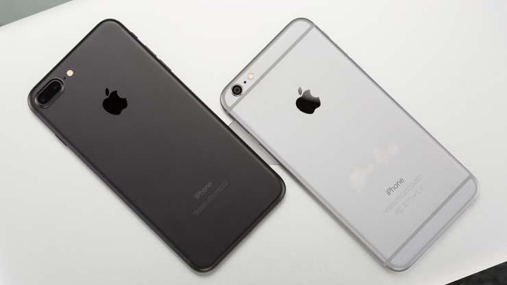
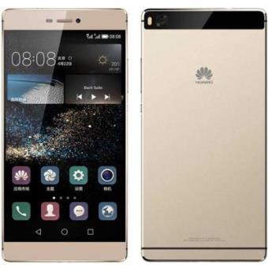
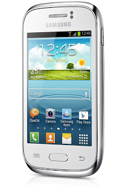

TELEFONIA CELULAR EN MEXICO
TELEFONO CELULAR
Ejemplo de un telefono celular:

Ejemplo de un telefono celular:
La telefonía móvil o telefonía celular es un medio de comunicación inalámbrico a través de ondas electromagnéticas. Como cliente de este tipo de redes, se utiliza un dispositivo denominado teléfono móvil o teléfono celular. En la mayor parte de Hispanoamérica se prefiere la denominación teléfono celular o simplemente celular, aunque en Cuba se dice de ambas formas, y mientras que en España es más común el término teléfono móvil o simplemente móvil.
El teléfono móvil o teléfono celular es un aparato indispensable en la actualidad; sin embargo su popularización ha sido un fenómeno muy reciente. En un principio el teléfono móvil solo podía ser usado en vehículos por su tamaño, reduciéndose posteriormente a una unidad portátil, y finalmente al tamaño de bolsillo que utilizamos hoy. Pero el teléfono en sí es solo una pequeña parte de un sistema de telefonía mayor. El sistema celular fue creado para satisfacer la demanda de comunicación móvil dentro de un espectro de radiofrecuencia limitado. Esta limitación es el factor original que motivó y sigue motivando el desarrollo del teléfono móvil, frente a otros de los varios factores como la duración de la batería o el tamaño del aparato. El sistema debe acomodar miles de usuarios dentro de un espectro reducido para transmitir cada vez más información. La transmisión de voz, pero actualmente también la demanda de imágenes, vídeos y acceso a internet, continúan aumentando los requisitos del sistema. La radio surgió como una alternativa a la comunicación por cable a finales del s. XIX. En un primer momento fue utilizada para comunicación marítima, pero a partir de la década del 1920 comenzaron los intentos de aplicarla también a la comunicación móvil en tierra. En 1923, el cuerpo de policía de Victoria, Australia, fue el primero en utilizar comunicación inalámbrica dúplex en coches, poniendo fin a la práctica de dar reportes policiales en las cabinas de teléfono públicas.1 Estos teléfonos móviles primitivos permanecieron restringidos al uso gubernamental hasta los años 40, cuando se extendió al público general
De acuerdo a Ciertas características que los Teléfonos Celulares Poseen se clasifican en GAMAS
Los Telefonos Celulares con este tipo de gama suelen ser siempre los mejores equipados ,el costo que este tipo de gama presenta en muy elevado ,ya que los equipos son versiones nuevas como el diseño,sistema operativo etc. EJEMPLO:
Los Telefonos Celulares con este tipo de gama suelen ser mejores en algunas cosas ,el costo que este tipo de gama presenta en regular no muy caro pero tampoco no muy barato ,su diseño es agradabla y su sistema operativo es amigable EJEMPLO:
Los Telefonos Celulares con este tipo de gama no suelen hacer lo mismo como los de Gama alta pero tampoco se quedan atras ,el costo que este tipo de gama presenta es bajo ,el diseño es un poco agradable para ciertas personas EJEMPLO:
Los siguientes Telefonos celulares son prototipos
El nuevo Smartphone de LG ,el LGZ es destacado por su flexibiliodad ,La pantalla de este dispositivo es concava parecida a la de una pantalla OLED curva de TV.
Proyecto Ara es el nombre en clave de una iniciativa de Google que tiene como objetivo desarrollar una plataforma de hardware libre para la creación de los teléfonos inteligentes modulares. La plataforma incluirá un marco estructural con módulos de teléfonos inteligentes a elección del propietario, tales como una pantalla, un teclado o una batería adicional. Esto permitiría a los usuarios cambiar módulos que no funcionen o actualizar módulos individuales a medida que las innovaciones vayan surgiendo, proporcionando ciclos de vida mucho más largos y reduciendo la contaminación producida por basura electrónica.
Samsung ha hecho de la pantalla curva el sello distintivo en sus teléfonos Galaxy de gama alta pero el próximo año la compañía podría llevar la idea aún más lejos. Según varios analistas del mercado de la telefonía consultados por Bloomberg, la empresa coreana está lista para incorporar pantallas flexibles en dos modelos de teléfono. Con ellas será posible plegar el terminal para que ocupe menos espacio o desplegarlo cuando se quiera navegar por la web en una pantalla de mayor tamaño
Es un teléfono de triple pantalla de ejecución de acciones Android que aparece como una tienda de campaña, se desploma en una pizarra curvada, y se despliega como un pequeño libro